Malaysia's Tour
Kuala Lumpur
Masjid Putra
KL Tower
Pasar Malam Taman Connaught
Batu Caves
Sunway Lagoon
Petaling Street
Penang
Escape Park
Kek Lok Si
Clan Jetties
Penang Hill
Penang Nationl Park
Wat Chayamangkalaram
Kota Kinabalu
Mount Kinabalu National Park
Tunku Abdul Rahman Park
Kota Kinabalu City Mosque
Lok Kawi Wildlife Park
Pu Tuo Si Temple
Mari Mari Cultural Village
Ipoh
Concubine Lane
Sam Poh Tong Temple
Tasik Cermin Ipoh
Birch Memorial Clock Tower
Lost World of Tambun
Kellie Castle
Malacca
Jonker Street
Dutch Square
(Red Square)
A Famosa
Taming Sari Tower
(Malacca Tower)
Malacca River Cruise
Cheng Ho's Cultural Museum
Johor Bahru
Legoland
Jalan Tan Hiok Nee
Sultan Abu Bakar State Mosque
Johor Chinese Old Temple
Arulmigu Sri Rajakaliamman Glass Temple
Danga Bay
Salahuddin Wood Fired Bakery
back to top ^
1
2
3
4
Scenic image display
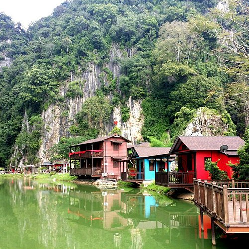
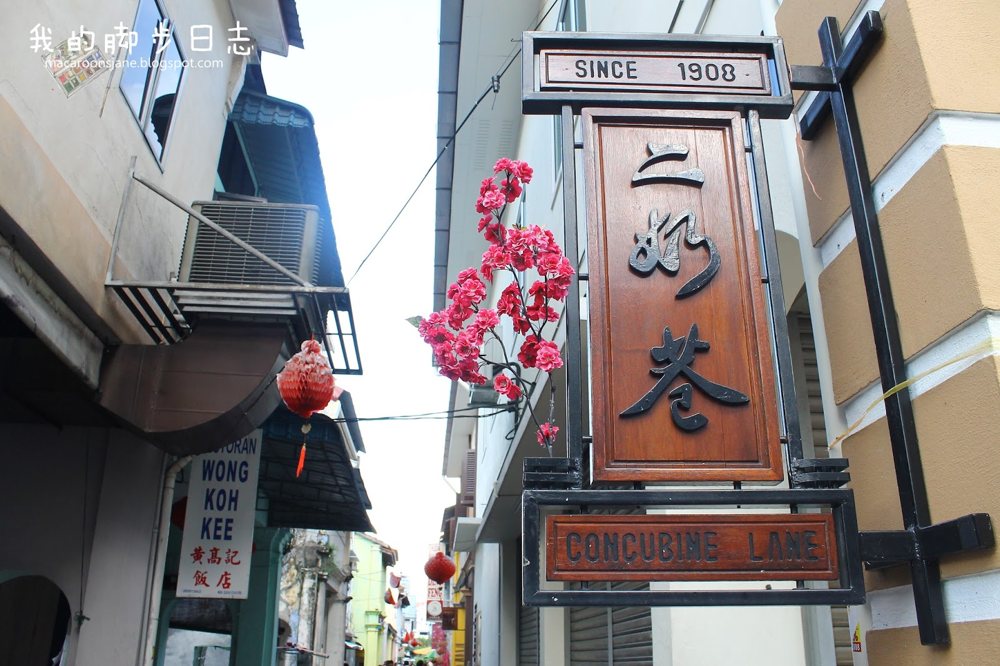
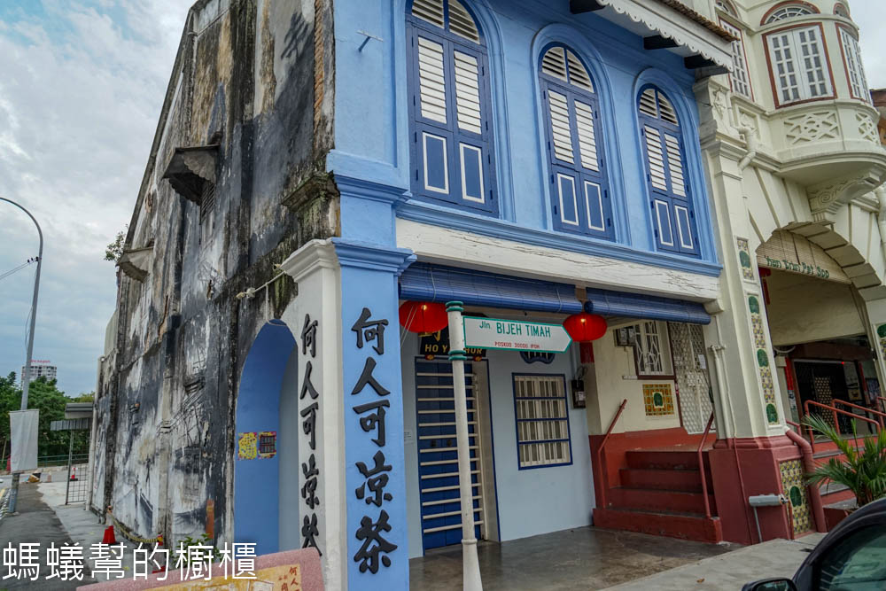
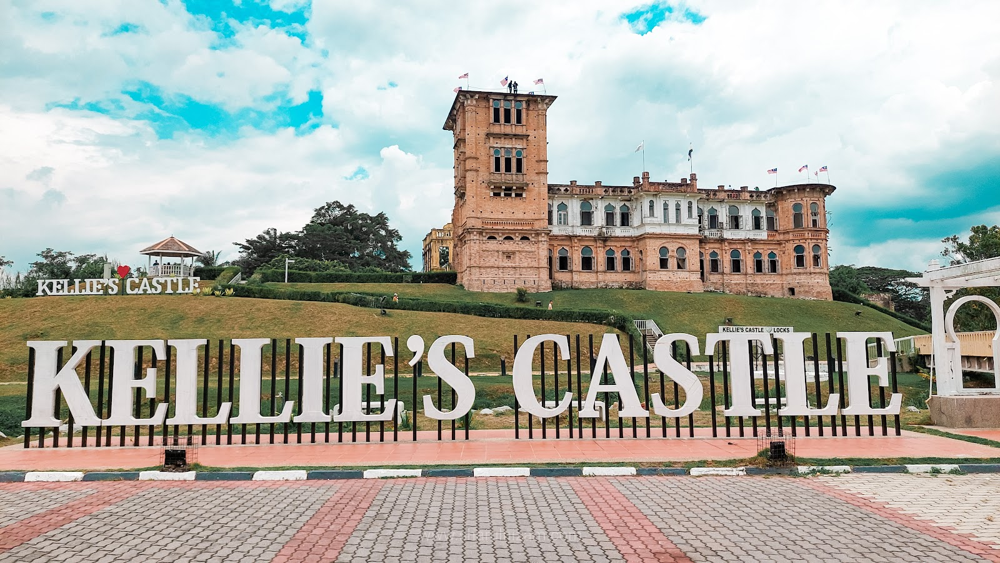
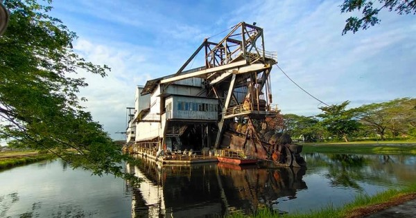
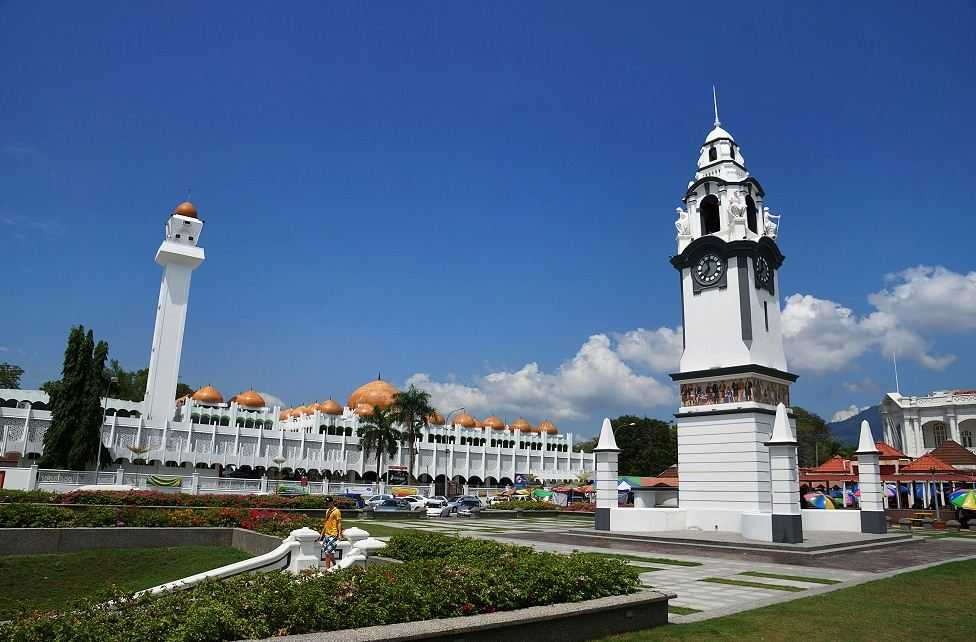
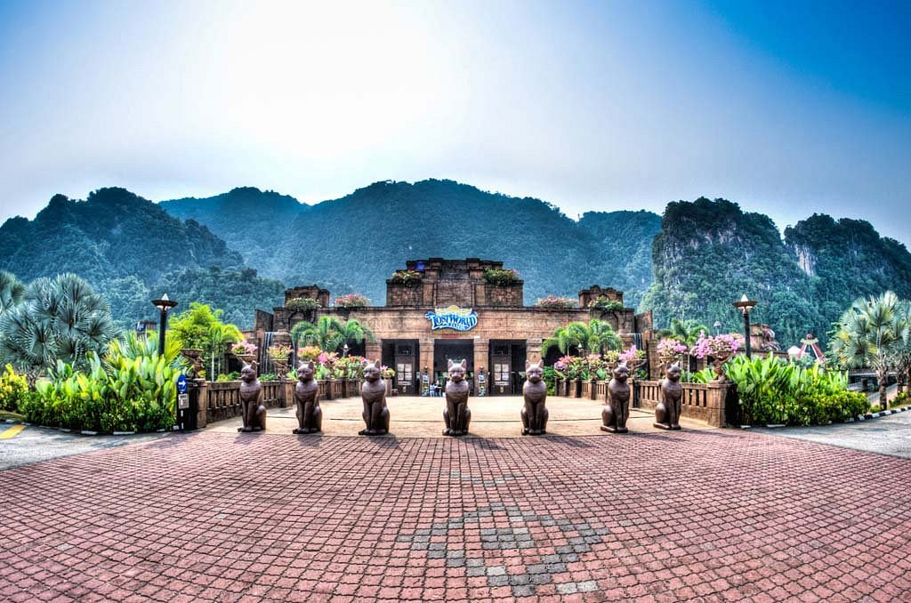
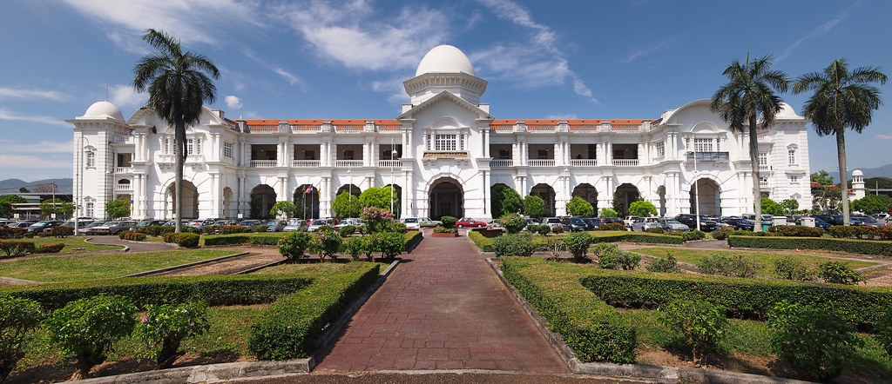
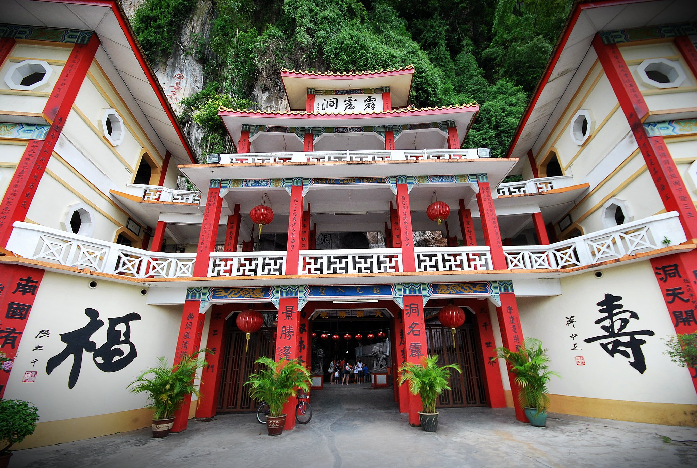
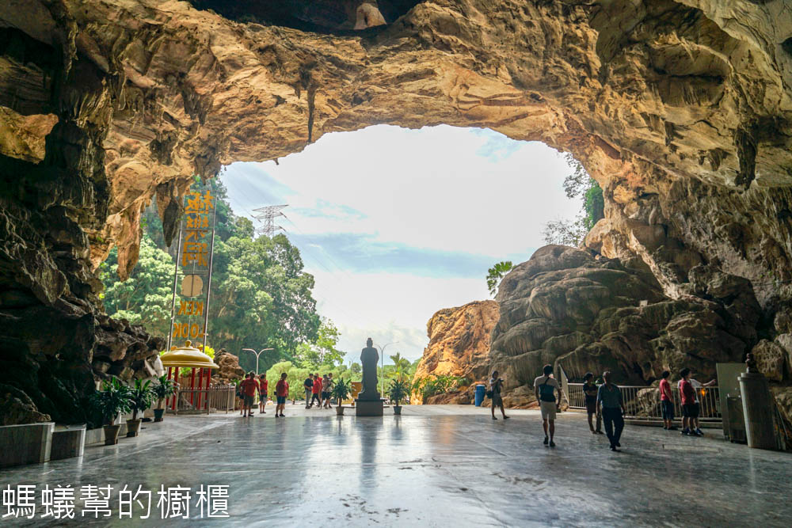
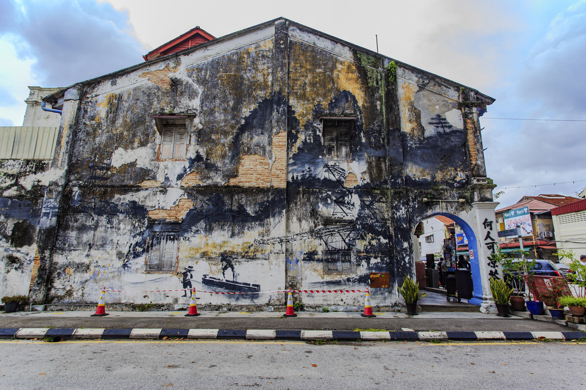
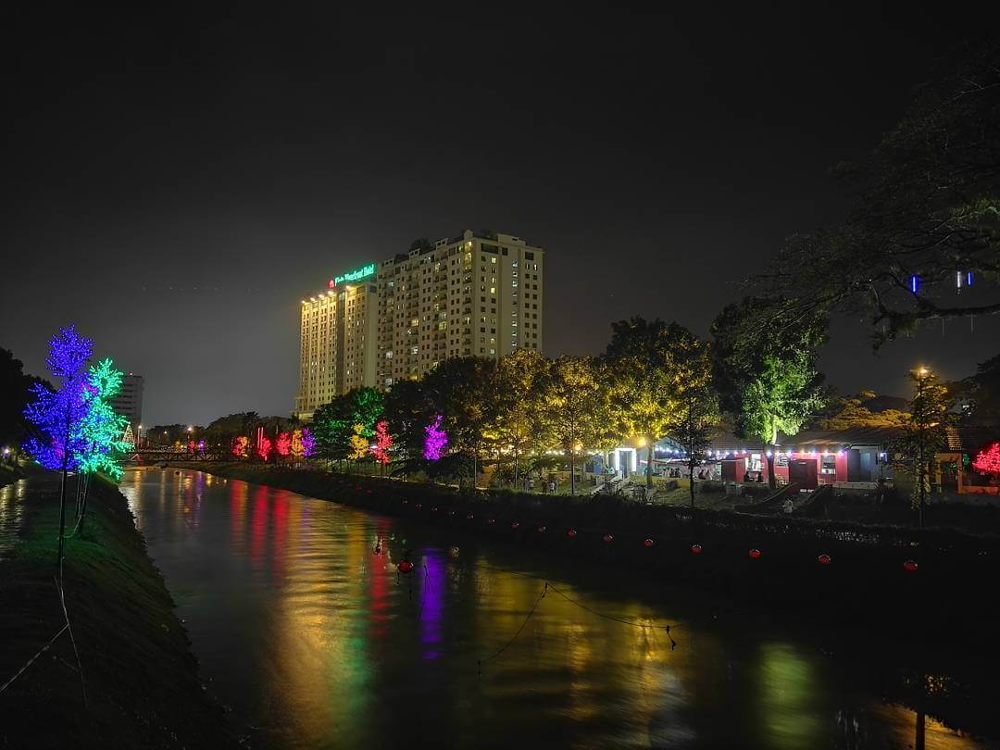